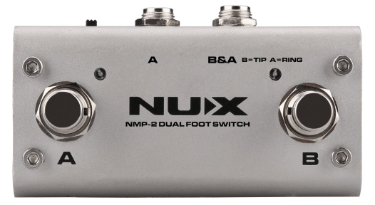
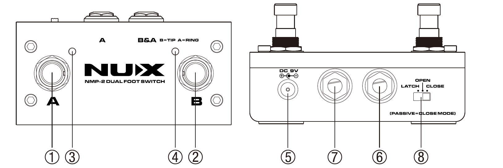
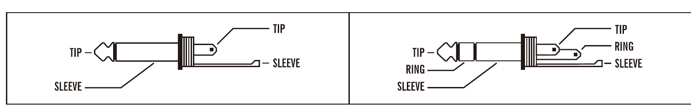
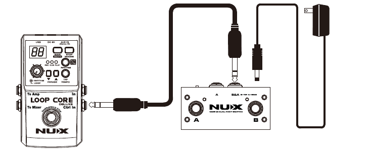
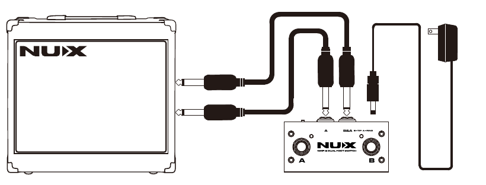

NMP-2
Dual Foot Switch
Owner’s Manual
Welcome
Thank you for purchasing the NMP-2 foot switch controller. It is a multi foot controller especially designed for arranger instruments (keyboards, modules, effect pedals, etc.). Using this controller you can easily activate all the main functions of your equipment.
Safety Information
Warning
To reduce the risk of fire or electric shock, do not expose this appliance to rain or moisture.
Caution
This equipment has been tested and found to comply with the limits for a Class B digital device pursuant to Part 15 of FCC Rules. Operation is subject to the following two conditions: (1) this device may not cause harmful interference, and (2) this device must accept any interference received, including interference that may cause undesired operation.
The lightning symbol within a triangle means, “Electrical caution!” It indicates the presence of information about operating voltage and potential risks of electrical shock.
The exclamation point within a triangle means, “Caution!” Please read the information next to all caution signs.
Features
- This unit combines the functions of latch type and WTB-005 (momentary type) foot switches. Both of the unit’s foot switches may be set to function as either a latch or momentary type (Open, Close) switch.
- You can connect to gear equipped with TRS 1/4″ (6.35mm) phone jacks using a connection cable with stereo 1/4″ (6.35mm) phone plugs at both ends.
- The NMP-2 can be used with Loop Core Deluxe for phrase up/down.
- It can also be used in Close mode, even in a passive state.
Product Description

-
Foot Switch A
Use this as a switch for the device connected to Jack A or Jack B&A. Refer to Connections.
-
Foot Switch B
Use this as a switch for the device connected to Jack B or Jack B&A. Refer to Connections.
-
Foot Switch A Indicator
When foot switch A is set to the latch type function, this indicator alternately lights or goes out each time the foot switch is pressed. When foot switch A is set to the momentary type function (Open or Close), this indicator lights only while the foot switch is held down.
-
Foot Switch B Indicator
When foot switch B is set to the latch type function, this indicator alternately lights or goes out each time the foot switch is pressed. When foot switch B is set to the momentary type function (Open or Close), this indicator lights only while the foot switch is held down.
-
DC Jack
The NMP-2 uses 9V (positive outside, negative inside), 2.5mm plug to active Latch mode, Open mode (also Close mode with indicator).
-
Jack A
Connect the device being controlled with foot switch A here. Use a connection cable with 1/4″ (6.35mm) phone plugs at both ends.
-
Jack B&A
Connect devices equipped with TRS or TS 1/4″ (6.35mm) phone jacks here. Use a connection cable with stereo or mono 1/4″ (6.35mm) phone plugs at both ends.
TS (mono) is for foot switch B only. If you want to operate foot switch A and foot switch B at the same time, you must use TRS (stereo) phone plugs here.
-
Mode Switch
This sets the functions for foot switch A and B to Latch or Momentary (Open, Close).
After referring to the owner’s manual for the device you are connecting, switch this to the appropriate setting.
Open mode means while you hold the foot switch, the Tip and Sleeve is opened (using mono cable). Close mode means while you hold the foot switch, the Tip and Sleeve is closed (using mono cable).

TS (mono) plug, left — TRS (stereo) plug, right
Connections

When connecting to Jack B&A, do not plug any device into Jack A. This may result in damage and/or malfunction.

Precautions
- Do not use the pedal in high temperature, high humidity, or subzero environments.
- Do not use the pedal in direct sunlight.
- Please do not disassemble the pedal by yourself.
- Please keep this manual for future reference.
The CE mark attached to our company’s battery- or mains-powered products indicates full conformity with the harmonized standard(s) EN 61000-6-3:2007+A1:2011 & EN 61000-6-1:2007 under the Council Directive 2004/108/EC on Electromagnetic Compatibility.
Whilst every effort has been made to ensure the accuracy and content of this manual, Cherub Technology Co. makes no representations or warranties regarding the contents.